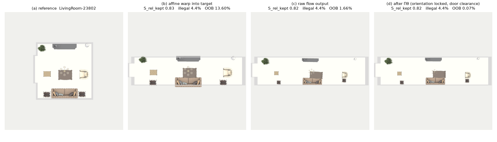
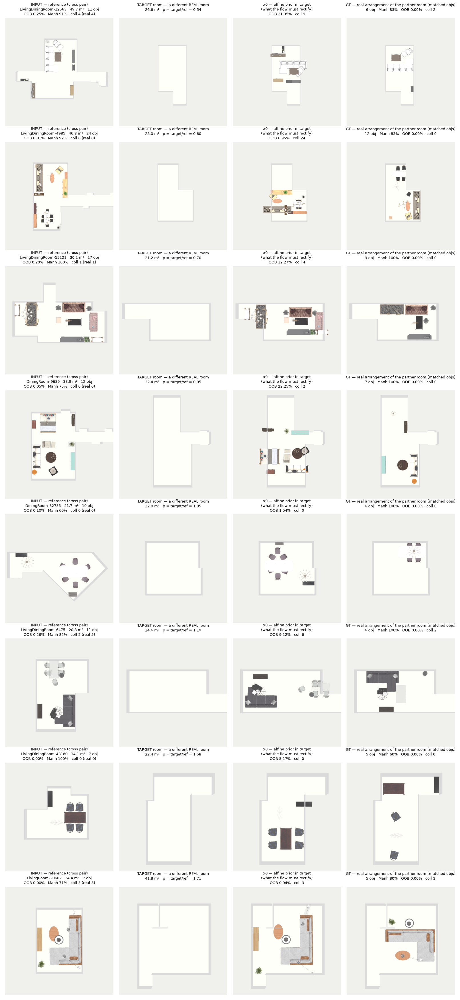
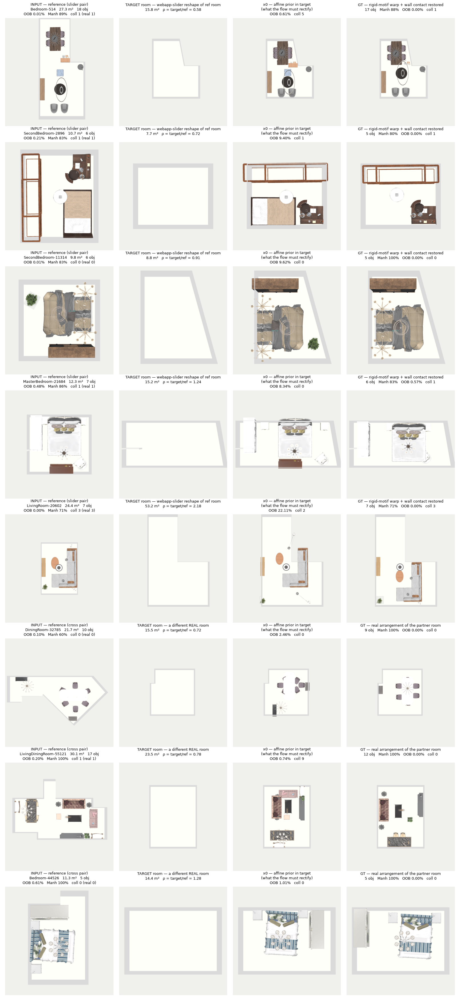
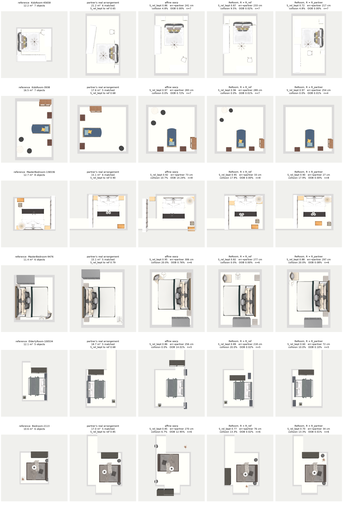
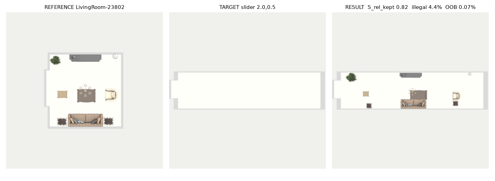
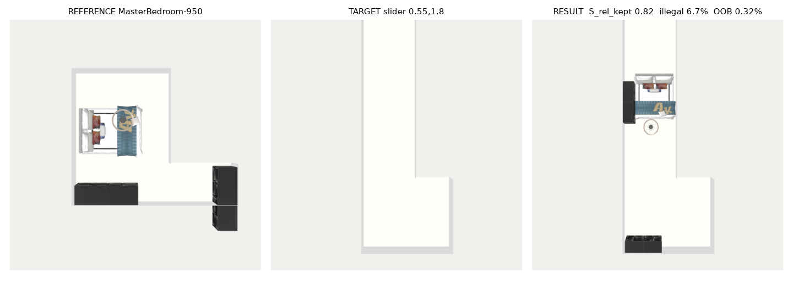
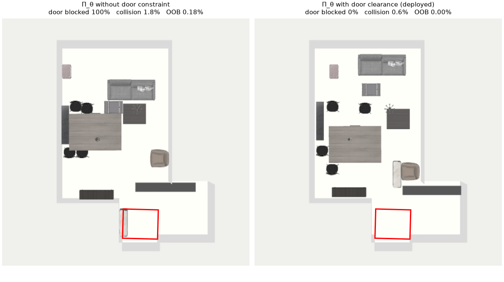
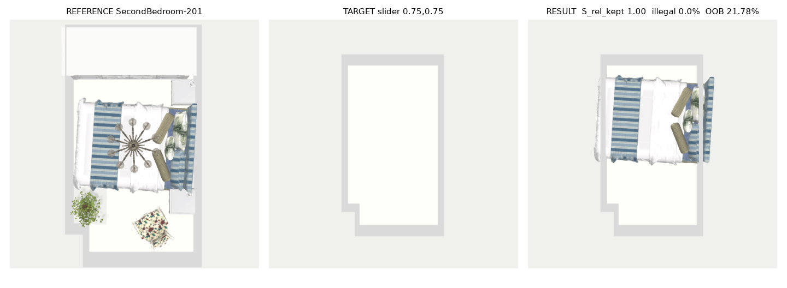

Preprint — in preparation (not peer-reviewed) · v0.2
Method walkthroughCodeReferencesv0.1 (superseded)

Abstract. Transplanting a specific interior design into a room of different shape and size is a common request that scene generators do not serve: they sample a plausible layout rather than reproduce a given one. We study reference-guided 3D scene retargeting: given a reference scene \(S_\text{ref}\) and a target floor polygon \(P_t\) with its doors and windows, produce a layout that keeps the reference's objects, groupings and pairwise relations while every object lies inside the room, no two objects interpenetrate, and no doorway is blocked. The conflict is that relations are relative and scale-sensitive while the constraints are absolute. ReRoom resolves it with four parts. (i) Training data: 40,403 known pairs from 3D-FRONT, each the same furniture arranged by a designer in two different real rooms and selected so that the two arrangements share the reference's relations (\(S_\text{rel}^\text{kept}\ge0.75\)), mixed with rigid-motif reshapes of the reference room for boundary shapes no real room provides. (ii) A rectified flow that starts from the affine transplant of the reference and is conditioned on the reference's pairwise relations as a dense attention bias and on wall, door and window tokens. (iii) A discrete selection stage that decides which objects a smaller room keeps by retained relational mass. (iv) A constrained projection \(\Pi_\theta\), an augmented-Lagrangian solve that enforces non-penetration, containment, door clearance and wall-parallel orientation after sampling. On 40 held-out pairs retargeted into a different real room, ReRoom keeps \(S_\text{rel}^\text{kept}=0.866\) against 0.934 for the affine warp while reducing collision from 8.4% to 4.9% and out-of-bounds area from 12.9% to 0.17%; feeding a different arrangement's relations to the same model moves the output toward that arrangement, so the condition acts as a controllable style input.
A person who likes one room's layout rarely wants a different design for the next room; they want that design, adapted to fit. We call this reference-guided 3D scene retargeting: transplant a reference layout \(S_\text{ref}\) into a target room boundary \(P_t\) of arbitrary shape, area and aspect ratio, so that the reference's composition, functional groupings and spatial relationships carry over while the result is physically valid in the new room. The target is a particular existing design, not a plausible new one, which separates the task from scene synthesis.
The conflict. Design identity lives in relative structure: a chair's offset from its table in the table's frame, a bed against a wall, a sofa facing a television. These relations are scale-sensitive and belong to pairs of objects. Physical validity is absolute: every footprint inside \(P_t\), no interpenetration, doorways clear. Warping the layout to the boundary preserves relations and violates the constraints; placing objects to satisfy the constraints abandons the relations.
Existing approaches resolve the conflict in one direction. Layout generators — autoregressive [1] [3], diffusion [2], graph-conditioned [17] — sample a layout consistent with a category set or a semantic graph but are not given the reference geometry to reproduce. Energy-based layout optimisation [19] [20] satisfies hand-written design guidelines, again without a reference. Rearrangement models such as LEGO-Net [4] move a layout toward their own learned regularity rather than toward a given design (§5.8), and physics-aware generation such as PhyScene [5] optimises plausibility of a new layout. The affine warp of the reference is the opposite extreme: on our held-out real pairs it keeps \(S_\text{rel}^\text{kept}=0.934\) but places 12.9% of the furniture area outside the room and blocks 38% of doorways (Table 1).
Requirements and design. Three observations determine the architecture. (1) The reference is the best available starting point, so the flow starts from the affine transplant rather than from noise and learns a rectification. (2) Designers adapt a design when they place it in another room: two real arrangements of the same furniture in different rooms agree on relations only partially (median \(S_\text{rel}^\text{kept}\) 0.66 between a reference and a random category-matched partner). A model trained on such pairs without further information regresses toward an average arrangement; the target arrangement must be an explicit input, and the input that measures what "the same design" means is the set of pairwise relations. (3) The hard constraints are discrete in character (a door is blocked or not, two boxes overlap or not) and are best imposed last, by a solver, after the learned stages.
Contributions.
Furniture layout by energy optimisation predates learned generators: Yu et al. [19] and Merrell et al. [20] optimise ergonomic and design-guideline costs by simulated annealing or interactive sampling, and PlanIT [18] plans a relation graph before instantiating it. Their cost terms — pairwise distance, alignment, wall contact — are the relations that \(S_\text{rel}\) measures; none of these methods takes a reference layout as input. Deep generators include autoregressive transformers (ATISS [1], SceneFormer [3]), scene diffusion (DiffuScene [2]) and generation from a semantic graph prior (InstructScene [17]); they synthesise a layout consistent with a category set or graph. LEGO-Net [4] learns to rearrange a messy layout toward a regular one, and PhyScene [5] adds physical and interactive plausibility to generation. Procedural generators such as ProcTHOR [13] populate rooms from rules. Our task differs from all of them in its input: a specific reference layout whose relations are to be kept in a new boundary.
Flow Matching [6] and Rectified Flow [7] regress a velocity field along straight interpolation paths between two distributions; unlike denoising diffusion [14], the source distribution can be informative, which we use to start from the affine transplant. Diffusion Transformers [8] modulate a transformer [15] by adaptive layer norm; we use a permutation-equivariant variant over object tokens with additive pairwise attention biases in the manner of Graphormer [22].
Differentiable optimisation layers embed a constrained solve in a network (OptNet [9], cvxpylayers [10]). Our projection is a non-convex problem (box penetration, containment in a possibly non-convex polygon) solved by an augmented Lagrangian [21]; it is applied at test time only.
Discrete decisions first — which objects survive, at which asset size — then the continuous placement by the flow, then the hard constraints (Fig. 2).
Figure 2: Inference pipeline. (a) Stage 1 selects the surviving objects on the reference's relation graph; (b) a room that shrinks along any axis swaps assets for smaller ones of the same category; (c) the rectified flow places the survivors, conditioned on their reference relations and on the wall, door and window tokens of \(P_t\); (d) the constrained projection \(\Pi_\theta\) enforces the hard constraints; (e) a room that grew beyond 1.1× area is populated.
A reference scene is \(S_\text{ref}=\{(c_i,s_i,p_i^\text{ref},\theta_i^\text{ref})\}_{i=1}^N\) (category, 3-D size, floor position, yaw). The target is a simple polygon \(P_t\), represented by 32 boundary samples with inward normals, together with its doors and windows as line segments on the boundary (3D-FRONT annotations, re-anchored when a room is reshaped). Each object's state is \(x_i=(u_i,v_i,\cos\theta_i,\sin\theta_i)\) in the frame of the minimum rotated rectangle of \(P_t\), with \(u,v\) normalised by the rectangle's half extents. The flow starts from the affine transplant \(\mathcal T\) of the reference into this frame plus noise and regresses the straight path to the target layout [7]:
$$x_0=\mathcal T(S_\text{ref},P_t)+\sigma\epsilon,\qquad \mathcal L_\text{FM}=\mathbb E_{\tau,\,i\in\mathcal S}\big\lVert v_\theta(x_\tau,\tau\mid S_\text{ref},P_t,R)_i-(x_{1,i}-x_{0,i})\big\rVert^2,\quad x_\tau=(1-\tau)x_0+\tau x_1 ,$$with \(\sigma=0.3\) and \(\mathcal S\) the set of supervised objects (§4: a reference object without a counterpart in the target arrangement is not supervised). \(R\) is the relation condition of §3.3. Scope. Placement is 2-D position and yaw; vertical stacking is not modelled. Doors enter as inputs to the flow (§3.2) and as hard constraints of \(\Pi_\theta\) (§3.5); windows enter only as flow inputs. Circulation beyond the doorways — a walkable path between all furniture — is not constrained.
\(v_\theta\) is a 12-block Diffusion Transformer [8] of width 384 and 8 heads over object tokens (Fig. 3). A token concatenates the current state \(x_{\tau,i}\), the log size, the reference pose in the target frame and a learned category embedding. Structure enters only as additive attention biases, so the network is permutation-equivariant: a relatedness bias \(s_{ij}\) predicted from categories and sizes (RelHead), a bias from the current pairwise geometry (offset, distance, relative orientation, and each object's distance and misalignment to its nearest wall), and the relation condition \(b^R_{ij}\) of §3.3. Each object token also cross-attends to 40 boundary tokens — 32 wall samples and up to 8 opening tokens carrying a door (+1) or window (−1) flag — with a bias from the object-to-token geometry; this is how the flow sees where the doors are. Adaptive layer norm injects the flow time \(\tau\), a set encoder of \(P_t\), the room type and floor descriptors of the reference and target rooms. Three per-object heads read the final features: wall-ness \(w_i\) and ortho-ness \(o_i\), supervised by the target layout's wall contact and alignment, and an existence probability \(p_i\).
Figure 3: Backbone. Left: token and pair inputs. Centre: a DiT block; the three pairwise biases add to the self-attention logits, and objects cross-attend to wall and opening tokens. Right: heads; \(w_i\) and \(o_i\) gate the projection.
Training on known pairs (§4) makes the target a different human arrangement of the reference's objects, so the flow must be told which arrangement to produce. We condition on the quantities \(S_\text{rel}\) measures. For every relation \((i,j)\) of a layout's design graph — support, facing, alignment, symmetry, proximity, wall contact and others, built automatically from boxes and categories — let \(r_{ij}\in\mathbb R^{29}\) be its room-free feature: the offset of \(j\) in \(i\)'s frame \((\Delta x,\Delta y)/3\,\text{m}\), \((\cos\Delta\theta,\sin\Delta\theta)\), the footprint gap clipped to 1.5 m, \(\log(1+d_{ij})/2\), a 14-way relation-kind one-hot, the relation weight \(w_{ij}/3\), both log sizes and both wall-contact flags. The dense tensor \(R\in\mathbb R^{N\times N\times29}\) (zero where no relation exists) enters every block as a per-head bias \(b^{R,h}_{ij}=\mathrm{MLP}_h(r_{ij})+\mathrm{MLP}_h(r_{ji})\) and once per token as the projected mean \(\bar r_i\) of its rows. With probability 0.2 per training sample \(R\) is zeroed. In training \(R\) is computed from the target arrangement; at inference from the reference. Given a different arrangement's \(R\), the same model produces that arrangement more closely (Table 3), which makes \(R\) a style input.
Why not a pooled style code. We also trained an encoder \(E\) that maps a layout's relation tokens to \(z\in\mathbb R^{32}\) so that \(\lVert E(A)-E(B)\rVert^2\approx1-S_\text{rel}^\text{kept}(A,B)\) (74,754 pairs; held-out Spearman 0.785) and gave \(z\) to the flow. The flow barely reads it: taking \(z\) from the reference or from the partner arrangement changes the output by about a tenth of what swapping \(R\) does (Table 3, †). An arrangement is a set of constraints each binding a specific pair of objects; pooling over pairs discards which pair each constraint binds, and a vector fitted to a scalar similarity can rank arrangements but cannot be decoded into constraints. The dense tensor keeps each constraint on its pair and places it where the network reasons about pairs, in the attention logits.
When \(P_t\) cannot hold the reference, the decision of which objects survive precedes placement: a relation whose endpoint is deleted cannot be recovered by moving the others. An area budget from the target/reference area ratio \(\rho\) (slack 0.14) sets the number \(\kappa\) of survivors; objects whose shorter side exceeds the room's inscribed-circle diameter are removed; anchors (bed, sofa, dining table in their room types) are protected. Among the rest we keep the \(\kappa\)-subset \(S\) that maximises the retained relational mass \(\sum_{i,j\in S}w_{ij}\), by greedy removal of the object with the least incident weight; a motif child is removed with its head. Relation graph, condition and tokens are then rebuilt on the survivors. If the room shrinks along any axis — \(\min(\sqrt\rho,\min_a t_a/r_a)<0.97\) with \(t_a,r_a\) the target and reference extents — each asset is replaced by the closest smaller same-category 3D-FUTURE [12] asset; the check is per axis because a 1.4×0.8 reshape has \(\rho\approx1.1\) yet no longer fits a 2 m bed. After placement, a room that grew beyond \(\rho=1.1\) receives up to six objects of categories whose count grows with area in the corpus; the whole layout is then projected again (§3.5) and the additions are kept only if that joint solve is as feasible as the solve without them, so population never trades a hard constraint for an extra object.
The flow's output is near-feasible but not feasible. \(\Pi_\theta\) finds the closest layout that satisfies the constraints, anchored to the flow's positions \(\hat p_i\) and yaws \(\hat\theta_i\):
$$\min_{p,\theta}\ w_a\sum_i a_i\big(\lVert p_i-\hat p_i\rVert^2+(\theta_i-\hat\theta_i)^2\big)+w_f E_\text{flush}+w_\ell E_\text{align}\quad\text{s.t.}\quad \delta_{ij}(p,\theta)\le\alpha_{ij},\ \ \text{corners}(p_i,\theta_i)\subset P_t,\ \ \delta_{i\,d}(p,\theta)\le0\ \ \forall d\in\mathcal D,\ \ \theta_i=\phi_{w(i)}+k_i\tfrac{\pi}{2}\ \text{if}\ o_i>0.5 .$$\(\delta_{ij}\) is the separating-axis penetration depth of two oriented boxes that overlap in height, and \(\alpha_{ij}\) an allowance equal to the corpus co-occurrence overlap rate of the two categories times the smaller box radius (a chair may slide under a table, a wardrobe may not enter a chest). \(E_\text{flush}\) pulls objects with high wall-ness \(w_i\) against their nearest wall and \(E_\text{align}\) turns them to face away from it. \(\mathcal D\) is the set of door clearance boxes — door width × 0.9 m inside each door — treated as static obstacles that no floor-standing object may enter. The last constraint fixes every object the ortho head marks orthogonal to the nearest of the four wall-parallel directions \(\phi_{w(i)}+k\pi/2\) before the solve, so the solver resolves collisions by translation only; with yaw free, the penetration gradient rotated boxes to reduce overlap and 20% of objects ended more than 10° off the walls (Table 6). The problem is solved by an augmented Lagrangian [21] with Adam inner steps (20 per outer iteration, step 0.03), penalty starting at \(\mu_0=2w_a\) and doubling whenever an outer iteration fails to reduce the maximum violation to a quarter, until the violation is below 1 cm or 60 outer iterations. A heuristic regularity snap — children slotted to their parent's edge, wall objects flushed, objects within 22° squared — is not part of the pipeline: applied before \(\Pi_\theta\) it lowers \(S_\text{rel}^\text{kept}\) and leaves Manhattan alignment, out-of-bounds area and collision where the locked projection already puts them (Table 6). \(\Pi_\theta\) is the last operation on every object that came from the reference and is not used in training.
Assumptions. The ortho head outputs 0.94–0.95 for every category on the held-out set, so in practice every object is locked to a wall-parallel orientation: the projection assumes a Manhattan world, and a deliberately angled chair, a round table or a wall at 45° receives the nearest wall-parallel orientation. When the constraints are jointly infeasible — a bed longer than the room — the solver stops at the iteration cap and the violation remains (Fig. 8).
Why real arrangements. A pair built by warping the reference into a deformed copy of its own room has three measured defects. Its target room is always a mild deformation of the reference room (shape IoU 0.89 to the reference, against 0.65 for a real partner room). Its ground truth is a heuristic, so it inherits the heuristic's errors (wall contact of wall-affinity furniture 81–90% in the references, 56–78% after the warp). And its area-ratio gate must exclude large rescalings to keep the warp valid, so 0.75× and 1.35× targets (\(\rho=0.56\) and 1.82) never occur. We therefore supervise with human arrangements wherever they exist and keep a rigid warp only for boundary shapes no real room provides.
Known pairs. For a reference we take partner scenes of the same room type whose category-family sets have Jaccard similarity \(>0.6\) (families: beds, sofas, dining tables, low tables, storage, easy chairs; other categories match exactly), with area ratio in \([0.5,2]\), and match objects within each family by a spatial Hungarian assignment [16]. The ground truth places each matched reference object at its counterpart's real pose in the partner room; each object is then translated inside the room if needed (mean 2.9 cm). Among up to 32 such partners we keep those whose arrangement agrees with the reference, \(S_\text{rel}^\text{kept}(S_\text{ref},S_\text{gt})\ge0.75\) (up to six per scene); a scene without one uses its best partner. Counts on 3D-FRONT [11] (house-disjoint split, duplicate instances removed, 5–24 objects per room): training 10,852 scenes with a partner and 40,403 pairs, of which 9,345 scenes have a partner at \(\ge0.75\) (median best partner 0.86); validation 357 scenes and 1,062 pairs; test 1,267 scenes and 4,380 pairs. Every known pair is two real designer layouts; none is synthesised or augmented.
Slider pairs. The reference room is reshaped as an interactive editor would reshape it: width and depth log-uniform in \([0.5,1.8]\) independently (area ratio clipped to \([0.4,2.5]\)), a corner cut up to 0.6 with probability 0.5, a slanted wall with probability 0.3, a concave or \(n\)-gon operator with probability 0.2. The ground truth is the reference layout carried over with every motif rigid, wall contact restored for motifs whose head touched a wall in the reference (wall contact 56–78% → 71–83%), and each footprint pushed inside. If the gate cannot be met, non-anchor objects are removed from the ground truth in a fixed droppability order (at most half, at least four kept); 0.8% of scenes admit no reshape and are replaced by a neighbour.
One gate. A pair is accepted only if no object centre lies outside the room, no object has more than 5% of its footprint outside, at most 1% of the total furniture area is outside, and no collision is added beyond those of the real reference. Measured over 300 training scenes: slider ground truth 0.03% of furniture area outside (maximum 0.85%) and no added collision; known-pair ground truth 0.02% outside, with 23% of candidate pairs rejected. Each training sample is a known pair or a slider pair with probability 0.5; validation uses the same mixture.


Suites. All evaluation uses the held-out test split. Real: 40 references, each retargeted into a different real room whose human arrangement of the matched objects is known (known-pair construction of §4 without the \(S_\text{rel}\) selection, so the partner can differ strongly from the reference). Slider: 24 references (bedrooms and living rooms, 6–14 objects, 10–30 m²), each retargeted into eight reshapes of its own room: 0.75×, 1.35×, 0.8×1.3, 1.4×0.8 with a 0.3 corner cut, L (corner cut 0.5), T (two corner cuts), trapezoid (one wall slanted 0.55 m) and a 2:1 corridor (aspect 4). Every method runs the same inference path unless a row states otherwise: Stage 1, asset fit, \(k{=}8\) candidates and 50 Euler steps with a fixed seed, \(\Pi_\theta\), population.
Metrics. \(S_\text{rel}=1-\frac{1}{\sum w}\sum_{(i,j)\in\mathcal E}w_{ij}D(e^\text{ref}_{ij},e^\text{out}_{ij})\) over the reference relations \(\mathcal E\), with \(D\in[0,1]\) combining offset direction, relative orientation, log distance ratio and contact; a removed endpoint scores \(D=1\). \(S_\text{rel}^\text{kept}\) restricts \(\mathcal E\) to surviving pairs and isolates placement. \(S_\text{motif}\) is the weighted fraction of reference motifs whose head and enough members survive with intra-motif relations within tolerance. Pos. err is the mean distance of surviving matched objects to the partner arrangement (real suite). Collision: percentage of object pairs whose footprints overlap by more than 2% of the smaller one, excluding pairs the corpus co-occurrence matrix marks nestable. Out-of-bounds: percentage of total furniture area outside \(P_t\). Manhattan: objects within 4° of a wall-parallel orientation. Door blocked: percentage of door clearance boxes more than 5% covered by floor-standing furniture, over rooms with an annotated door (real: 13 of 40 rooms, slider: 64 of 192 cases). Kept: fraction of reference objects in the output. Statistics. Real: Wilcoxon signed-rank over the 40 pairs. Slider: the eight reshapes of a reference are averaged first and the test runs over the 24 references.
| Real partner rooms (\(n{=}40\) pairs) | \(S_\text{rel}^\text{kept}\) ↑ | \(S_\text{motif}\) ↑ | pos. err to partner | collision ↓ | out-of-bounds ↓ | Manhattan ↑ | door blocked ↓ | kept | n |
|---|---|---|---|---|---|---|---|---|---|
| affine warp of the reference | 0.934 | 1.00 | 216 cm | 8.40% | 12.85% | 93.5% | 37.7% | 1.00 | 40 |
| ReRoom, \(R=R_\text{ref}\) | 0.866 | 0.95 | 198 cm | 4.86% | 0.17% | 99.7% | 7.3% | 0.97 | 40 |
Table 1. Retargeting into a different real room. The affine warp keeps the reference's relations by construction and ignores the boundary. ReRoom loses 0.068 \(S_\text{rel}^\text{kept}\) (\(p=9.6\times10^{-6}\)) and reduces collision by 3.54 points (\(p=0.009\)), out-of-bounds area by 12.68 points (\(p=6.6\times10^{-8}\)) and blocked doors by 30.4 points over the 13 rooms with a door (\(p=0.012\)). The position error to the partner's arrangement is large for both (216 and 198 cm): the deployed model is asked to keep the reference, not to reproduce the partner (Table 3 shows the other setting).
| Slider reshapes (24 references × 8) | \(S_\text{rel}^\text{kept}\) ↑ | \(S_\text{motif}\) ↑ | collision ↓ | out-of-bounds ↓ | Manhattan ↑ | door blocked ↓ | kept | n |
|---|---|---|---|---|---|---|---|---|
| affine warp of the reference | 0.943 | 1.00 | 9.03% | 14.19% | 93.0% | 45.5% | 1.00 | 192 |
| ReRoom | 0.880 | 0.90 | 6.66% | 1.11% | 94.0% | 13.6% | 0.91 | 192 |
Table 2. The same comparison on reshapes of the reference's own room: \(\Delta S_\text{rel}^\text{kept}=-0.063\) (\(p=1.2\times10^{-7}\)), collision -2.37 pts (\(p=0.002\)), out-of-bounds -13.08 pts (\(p=1.2\times10^{-7}\)), door blocked -31.8 pts (\(p=0.008\), 8 references with a door). Per reshape:
| Reshape (affine / ours) | \(S_\text{rel}^\text{kept}\) ↑ | collision ↓ | out-of-bounds ↓ | Manhattan ↑ | kept (ours) | n |
|---|---|---|---|---|---|---|
| 0.75x | 0.901 / 0.892 | 20.5% / 8.0% | 12.6% / 0.63% | 93% / 100% | 0.62 | 24 |
| 1.35x | 0.900 / 0.879 | 2.7% / 4.1% | 1.3% / 0.02% | 93% / 100% | 1.00 | 24 |
| 0.8x1.3 | 0.947 / 0.891 | 8.2% / 5.6% | 10.4% / 0.39% | 93% / 100% | 0.98 | 24 |
| 1.4x0.8+cut | 0.937 / 0.897 | 6.9% / 5.7% | 19.8% / 0.12% | 93% / 91% | 0.98 | 24 |
| L | 0.999 / 0.874 | 8.8% / 10.6% | 23.9% / 2.35% | 93% / 92% | 0.86 | 24 |
| T | 0.999 / 0.863 | 8.8% / 7.4% | 20.8% / 1.20% | 93% / 85% | 0.91 | 24 |
| trapezoid | 1.000 / 0.917 | 8.8% / 8.5% | 4.7% / 0.73% | 93% / 84% | 0.98 | 24 |
| corridor | 0.861 / 0.826 | 7.4% / 3.4% | 20.0% / 3.46% | 93% / 100% | 0.97 | 24 |
Table 2b. Affine / ReRoom per reshape. The corridor has aspect 4, which occurs in no training pair (training aspect change at most 3.6 in the slider family). L and T cut corners off the reference room without changing its bounding rectangle, so the affine map is close to the identity: it keeps every relation and leaves the furniture in the removed corner outside the room (21–24% of the area). Manhattan alignment is measured against the room's bounding-rectangle axes; in the trapezoid, T and the cut 1.4×0.8 room ReRoom squares objects to the nearest wall, which may be oblique, so they count as off-axis. At 1.35× ReRoom has more collisions than the affine warp (4.1% against 2.7%), which scales every distance up by 1.35 and so pulls touching pairs apart.
| Condition (real partner rooms) | \(S_\text{rel}^\text{kept}\) ↑ | \(S_\text{rel}\) ↑ | pos. err to partner | collision ↓ | out-of-bounds ↓ | kept | n |
|---|---|---|---|---|---|---|---|
| trained without \(R\) (same data, same warm start as the next row) | 0.812 | 0.776 | 187 cm | 4.52% | 0.11% | 0.96 | 40 |
| trained with \(R\), before opening tokens, \(R=R_\text{ref}\) | 0.863 | 0.833 | 196 cm | 5.17% | 0.15% | 0.97 | 40 |
| ReRoom, \(R\) zeroed at inference | 0.793 | 0.772 | 187 cm | 3.97% | 0.11% | 0.97 | 40 |
| ReRoom, \(R=R_\text{ref}\) (deployed) | 0.866 | 0.836 | 198 cm | 4.86% | 0.17% | 0.97 | 40 |
| ReRoom, \(R=R_\text{partner}\) | 0.727 | 0.653 | 156 cm | 4.65% | 0.06% | 0.93 | 40 |
| pooled code \(z\) only, \(z=E(\text{ref})\) † | 0.734 | 0.716 | 166 cm | 4.09% | 0.11% | 0.97 | 40 |
| pooled code \(z\) only, \(z=E(\text{partner})\) † | 0.722 | 0.704 | 161 cm | 5.07% | 0.09% | 0.97 | 40 |
| known pairs without design matching, no \(R\) † | 0.628 | 0.612 | 166 cm | 4.59% | 0.17% | 0.97 | 40 |
Table 3. Rows 1–2 differ only in the training-time condition: same data, same starting checkpoint, same schedule, with and without \(R\): \(R\) adds 0.052 \(S_\text{rel}^\text{kept}\) on real rooms (\(p=0.012\)) and 0.026 on reshapes (\(p=0.002\)). Rows 3–5 are the deployed model with \(R\) removed at inference (its training-time dropout mode), with the reference's relations, and with the partner's. With the reference's relations \(S_\text{rel}^\text{kept}\) is 0.073 higher than with \(R\) removed (\(p=5.8\times10^{-5}\)). Replacing \(R_\text{ref}\) by the partner arrangement's relations moves the output toward the partner by 42 cm (\(p=9.4\times10^{-5}\)) and away from the reference by 0.138 \(S_\text{rel}^\text{kept}\): the condition steers which arrangement is produced. † Rows 6–8 are earlier models trained on known pairs without the design-matching selection and without the slider mixture, so they differ from the deployed model in data as well; rows 6–7 carry the pooled 32-d code of §3.3, and taking the code from the reference or from the partner changes \(S_\text{rel}^\text{kept}\) by 0.012 and the position error by 4 cm, against 0.138 and 42 cm when \(R\) is swapped (rows 4–5).
| Sampler (real partner rooms) | \(S_\text{rel}^\text{kept}\) ↑ | \(S_\text{rel}\) ↑ | \(S_\text{motif}\) ↑ | collision ↓ | out-of-bounds ↓ | kept | n |
|---|---|---|---|---|---|---|---|
| ReRoom, 1 Euler step | 0.864 | 0.837 | 0.94 | 5.45% | 0.07% | 0.97 | 40 |
| ReRoom, 5 Euler steps | 0.867 | 0.837 | 0.95 | 5.12% | 0.14% | 0.97 | 40 |
| ReRoom, 10 Euler steps | 0.864 | 0.834 | 0.96 | 4.71% | 0.14% | 0.97 | 40 |
| ReRoom, 50 Euler steps | 0.866 | 0.836 | 0.95 | 4.86% | 0.17% | 0.97 | 40 |
| direct regressor (\(\tau{=}0\) in training), 1 step | 0.843 | 0.665 | 0.86 | 5.90% | 0.09% | 0.85 | 40 |
| Sampler (slider reshapes) | \(S_\text{rel}^\text{kept}\) ↑ | \(S_\text{rel}\) ↑ | \(S_\text{motif}\) ↑ | collision ↓ | out-of-bounds ↓ | kept | n |
|---|---|---|---|---|---|---|---|
| ReRoom, 50 steps | 0.880 | 0.791 | 0.90 | 6.66% | 1.11% | 0.91 | 192 |
| ReRoom, 1 step | 0.878 | 0.790 | 0.90 | 6.50% | 1.19% | 0.91 | 192 |
| direct regressor, 1 step | 0.877 | 0.571 | 0.79 | 6.73% | 1.49% | 0.74 | 192 |
Tables 4–5. The start is already the affine transplant and \(\Pi_\theta\) finishes the geometry, so we test whether an iterative flow is needed. Integrating the trained flow with one Euler step instead of fifty costs little on survivors' geometry. A network with the same architecture, data, condition and warm start, trained as a direct regressor (\(\tau\) fixed at 0, so it predicts \(x_1-x_0\) from the affine prior in one pass), matches the survivors' \(S_\text{rel}^\text{kept}\) but its existence head removes furniture it cannot place: kept 0.85 on real rooms and 0.74 on reshapes, against 0.97 and 0.91 for the flow, which lowers \(S_\text{rel}\) over all reference relations and \(S_\text{motif}\). The flow's contribution is that it places the whole design; the regressor, trained against the same targets, learns to drop the objects whose placement is uncertain.
| Last stage (real partner rooms, same flow output) | \(S_\text{rel}^\text{kept}\) ↑ | collision ↓ | out-of-bounds ↓ | Manhattan ↑ | door blocked ↓ | n |
|---|---|---|---|---|---|---|
| raw flow output | 0.888 | 7.23% | 7.88% | 83.4% | 24.7% | 40 |
| regularity snap only | 0.842 | 7.35% | 3.58% | 87.7% | 27.1% | 40 |
| \(\Pi_\theta\), yaw free, no door constraint | 0.868 | 4.38% | 0.62% | 75.4% | 37.1% | 40 |
| \(\Pi_\theta\), yaw locked, no door constraint | 0.867 | 4.82% | 0.10% | 99.7% | 36.3% | 40 |
| \(\Pi_\theta\), yaw locked + door clearance (deployed) | 0.866 | 4.86% | 0.17% | 99.7% | 7.3% | 40 |
| snap then \(\Pi_\theta\) | 0.828 | 4.80% | 0.12% | 99.7% | 9.9% | 40 |
| \(\Pi_\theta\) then snap | 0.837 | 4.91% | 0.10% | 99.7% | 7.3% | 40 |
| Last stage (slider reshapes, same flow output) | \(S_\text{rel}^\text{kept}\) ↑ | collision ↓ | out-of-bounds ↓ | Manhattan ↑ | door blocked ↓ | n |
|---|---|---|---|---|---|---|
| raw flow output | 0.910 | 9.60% | 7.20% | 90.2% | 47.1% | 192 |
| regularity snap only | 0.862 | 9.91% | 3.88% | 90.4% | 42.2% | 192 |
| \(\Pi_\theta\), yaw free, no door constraint | 0.879 | 6.07% | 0.95% | 75.9% | 48.4% | 192 |
| \(\Pi_\theta\), yaw locked, no door constraint | 0.884 | 6.74% | 0.82% | 94.0% | 45.4% | 192 |
| \(\Pi_\theta\), yaw locked + door clearance (deployed) | 0.880 | 6.73% | 1.11% | 94.0% | 13.6% | 192 |
| snap then \(\Pi_\theta\) | 0.837 | 6.99% | 1.14% | 93.6% | 13.1% | 192 |
| \(\Pi_\theta\) then snap | 0.845 | 7.09% | 0.88% | 94.0% | 14.9% | 192 |
Tables 6–7. All rows start from the same flow output of each case (population disabled). The raw output keeps relations but leaves furniture outside the room. With yaw free, \(\Pi_\theta\) clears the boundary and rotates objects off the walls; locking orientation restores wall alignment; adding the door boxes clears doorways. The heuristic snap alone does not enforce containment, and combined with \(\Pi_\theta\) it lowers \(S_\text{rel}^\text{kept}\) by 0.038 (snap first) or 0.028 (snap last) on real rooms while changing collision by at most 0.06 points and out-of-bounds area by at most 0.07 points; the deployed pipeline therefore ends with \(\Pi_\theta\) alone.
| Stage 1 (slider 0.75×, area 0.56×, \(n{=}24\)) | \(S_\text{rel}\) ↑ | \(S_\text{rel}^\text{kept}\) ↑ | \(S_\text{motif}\) ↑ | collision ↓ | out-of-bounds ↓ | door blocked ↓ | kept | n |
|---|---|---|---|---|---|---|---|---|
| off: the flow's existence head decides | 0.848 | 0.865 | 0.97 | 8.28% | 1.17% | 47.1% | 0.98 | 24 |
| importance-ordered mask | 0.373 | 0.892 | 0.59 | 7.05% | 1.11% | 19.6% | 0.60 | 24 |
| relational-mass selection (deployed) | 0.490 | 0.892 | 0.59 | 7.96% | 0.63% | 17.5% | 0.62 | 24 |
| Stage 1 (real partner rooms) | \(S_\text{rel}\) ↑ | \(S_\text{rel}^\text{kept}\) ↑ | \(S_\text{motif}\) ↑ | collision ↓ | out-of-bounds ↓ | kept | n |
|---|---|---|---|---|---|---|---|
| off | 0.845 | 0.851 | 0.96 | 4.33% | 0.14% | 0.99 | 40 |
| importance-ordered mask | 0.814 | 0.862 | 0.95 | 4.87% | 0.15% | 0.97 | 40 |
| relational-mass selection (deployed) | 0.836 | 0.866 | 0.95 | 4.86% | 0.17% | 0.97 | 40 |
Tables 8–9. Which objects survive when the room is too small. "Off" leaves the decision to the flow's existence head, which was trained on known pairs where unmatched objects are unsupervised and therefore rarely removes anything; the importance mask removes the most droppable categories first; relational-mass selection keeps the objects that carry the most reference relations. The importance mask and relational-mass selection use the same survivor budget \(\kappa\). \(S_\text{rel}\) counts removed relations as lost, \(S_\text{rel}^\text{kept}\) measures the survivors' placement. At 0.75× the flow's existence head alone keeps 0.98 of the furniture; the constraints then cannot all be met and 47% of doorways stay blocked (out-of-bounds 1.17%). Selection keeps 0.62, which lowers blocked doors to 17.5% and out-of-bounds to 0.63% and raises the survivors' \(S_\text{rel}^\text{kept}\) from 0.865 to 0.892; every removed object costs its relations, so \(S_\text{rel}\) falls from 0.848 to 0.490. Choosing the survivors by relational mass instead of by category importance keeps 0.116 more \(S_\text{rel}\) at the same number of objects. On real partner rooms (area ratio 0.5–2) selection removes few objects (kept 0.97 against 0.99) and changes \(S_\text{rel}\) by -0.009. Stage 1 is therefore the price of feasibility under capacity, not a gain in fidelity.
| Relation condition corrupted (real partner rooms) | \(S_\text{rel}^\text{kept}\) ↑ | \(S_\text{rel}\) ↑ | collision ↓ | out-of-bounds ↓ | kept | n |
|---|---|---|---|---|---|---|
| \(R_\text{ref}\) intact (deployed) | 0.866 | 0.836 | 4.86% | 0.17% | 0.97 | 40 |
| 10% of relations dropped | 0.851 | 0.830 | 3.80% | 0.07% | 0.97 | 40 |
| 30% of relations dropped | 0.844 | 0.815 | 3.92% | 0.11% | 0.97 | 40 |
| all relations dropped (\(R=0\)) | 0.793 | 0.772 | 3.97% | 0.11% | 0.97 | 40 |
Table 10. The relation graph behind \(R\) is built automatically from boxes and categories and can be wrong. Dropping a random 10% or 30% of the reference's relations from \(R\) (the graph used by Stage 1 and the metric is unchanged) degrades the output gradually toward the no-condition row.
| Opening tokens (both suites pooled per row) | \(S_\text{rel}^\text{kept}\) ↑ | collision ↓ | out-of-bounds ↓ | Manhattan ↑ | door blocked ↓ | kept | n |
|---|---|---|---|---|---|---|---|
| without wall / opening tokens (starting checkpoint) | 0.877 | 6.40% | 0.94% | 94.9% | 13.9% | 0.92 | 232 |
| with wall / opening tokens (deployed) | 0.877 | 6.35% | 0.95% | 95.0% | 12.6% | 0.92 | 232 |
Table 11. The deployed model adds wall and opening tokens (§3.2) to the checkpoint without them and continues training on the same data for up to 16 epochs; as for every model here, the checkpoint with the lowest validation loss is used (after 4 epochs; validation loss fluctuated between 0.20 and 0.28 without a trend). The row without tokens is the starting checkpoint under the same pipeline, including the door constraint of \(\Pi_\theta\), so the difference combines the tokens and 4 epochs of additional training. Before the projection, the raw flow output blocks 24.7% of doorways with the tokens and 23.2% without them on the real rooms with a door, so on this sample the tokens do not teach the flow to keep doorways clear; the door clearance of the deployed output comes from \(\Pi_\theta\) (Table 6).
LEGO-Net as a retargeter. We applied LEGO-Net [4] (pretrained, 50k iterations, living rooms) to the affine transplant of 16 living rooms at 0.75×, 1.0× and 1.35×, entirely through its own data loader. In its own relational metric (scale-normalised pairwise-offset preservation against the reference, \(\in[0,1]\); the affine init scores 1.0), LEGO-Net retains 0.703 ± 0.11 and raises collision from 1.28% to 2.86% (paired \(\Delta=-0.30\), Wilcoxon \(p=1.6\times10^{-9}\)); fed the clean reference with zero noise it still moves objects to 0.74. A rearrangement model trained toward regularity does not bind a specific reference.
| 120 living rooms, one evaluator | \(\text{Col}_\text{obj}\) ↓ | \(\text{Col}_\text{scene}\) ↓ | \(R_\text{out}\) ↓ | \(R_\text{walk}\) ↑ | \(R_\text{reach}\) ↑ | objects | n |
|---|---|---|---|---|---|---|---|
| 3D-FRONT reference (real) | 0.388 | 0.850 | 0.072 | 0.972 | 0.887 | 11.8 | 120 |
| PhyScene [5] (generated) | 0.409 | 0.867 | 0.122 | 0.963 | 0.863 | 12.1 | 120 |
| ReRoom, same-room reference | 0.423 | 0.942 | 0.021 | 0.886 | 0.863 | 11.7 | 120 |
| ReRoom, foreign reference | 0.287 | 0.792 | 0.021 | 0.931 | 0.931 | 11.1 | 120 |
Table 12. PhyScene's physical-plausibility suite [5], computed by one evaluator on the same 120 living rooms: \(\text{Col}_\text{obj}\), the fraction of objects whose 3-D box overlaps any other; \(\text{Col}_\text{scene}\), the fraction of rooms with at least one overlapping pair; \(R_\text{out}\), the fraction of objects extending outside the floor; \(R_\text{walk}\), the largest connected free area over all free area for a 0.3 m robot; \(R_\text{reach}\), the fraction of objects adjacent to that area. PhyScene generates a new layout; the 3D-FRONT row is the real layout; ReRoom retargets a reference into the room — its own layout, or the layout of a randomly drawn other living room (foreign reference). Paired over the 99 rooms both methods scored, ReRoom with the room's own layout as reference matches PhyScene's object collision (0.423 against 0.409, \(p=0.938\)) and reachability (\(p=0.561\)), places far fewer objects outside the room (0.021 against 0.122, \(p=4.3\times10^{-9}\)), has more rooms with at least one overlapping pair (0.942 against 0.867, \(p=0.033\)) and less walkable area (0.886 against 0.963, \(p=9.8\times10^{-5}\)). Both collision scores count any positive 3-D box overlap, including chairs pushed under a table, which the real layouts contain (0.388) and \(\Pi_\theta\) permits through the allowance \(\alpha_{ij}\); PhyScene's sampling guidance targets collision and reachability, while ReRoom does not constrain circulation beyond doorways (§3.1).
| Stage (median over 19 held-out pairs) | \(k{=}1\) | \(k{=}8\) | \(k{=}16\) |
|---|---|---|---|
| Stage 1 + asset substitution | 209 ms | 203 ms | 203 ms |
| flow, 50 Euler steps | 1179 ms | 1197 ms | 1215 ms |
| \(\Pi_\theta\) (augmented Lagrangian) | 2828 ms | 2583 ms | 2770 ms |
| population | 1 ms | 1 ms | 1 ms |
| total | 4191 ms | 4017 ms | 4146 ms |
Table 13. Wall-clock per stage on one NVIDIA GeForce RTX 3090 (34.7 M parameters, peak memory 409 MB). The projection dominates: the augmented Lagrangian runs up to 1,200 inner steps on tensors of a few dozen boxes, which is launch-bound, and it reaches the cap whenever the constraints are jointly infeasible.





| Component | Setting |
|---|---|
| Data | 3D-FRONT [11] bedrooms, living, dining and library rooms with 5–24 objects; house-disjoint split 11,090 / 1,346 / 1,376 scenes; duplicate instances (same category, size within 5%, footprint IoU ≥ 0.5) removed; assets from 3D-FUTURE [12] |
| Training pairs | known pairs: family Jaccard \(>0.6\), area ratio \([0.5,2]\), spatial Hungarian, partners with \(S_\text{rel}^\text{kept}\ge0.75\) (≤6 per scene of 32 candidates scored); slider pairs: width, depth log-uniform \([0.5,1.8]\), area ratio \([0.4,2.5]\), corner cut \(p{=}0.5\) up to 0.6, slant \(p{=}0.3\), concave/\(n\)-gon \(p{=}0.2\); mixture 1:1; gate: no centre outside, ≤5% per-object footprint outside, ≤1% total area outside, no added collision |
| Backbone | DiT, 12 blocks, width 384, 8 heads, 34.7 M parameters; category embedding 64; RelHead MLP (2×67 → 64 → 2); geometric bias MLP 5 → heads; relation condition MLP 29 → 64 → 8 (bias) and 29 → 384 (token); wall/opening cross-attention with 32 wall and 8 opening tokens, edge-bias MLP 4 → 64 → 8, zero-initialised output |
| Flow | informative prior \(\sigma=0.3\); straight interpolant; loss on supervised objects; auxiliary losses: wall-ness and ortho-ness heads (BCE / MSE, weight 1), existence head (BCE, weight 1), RelHead relatedness target (weight 1), metric wall-position loss (weight 8); condition dropout 0.2; 50% of samples with a scrambled prior (motifs moved rigidly) |
| Optimisation | warm start from a model trained on warped pairs; 24 epochs, batch 64, AdamW, lr \(5\times10^{-5}\) (condition layers 10×), weight decay \(3\times10^{-4}\), OneCycle, EMA 0.999; the deployed model adds the wall/opening tokens and continues for up to 16 epochs, lowest validation loss after 4; one RTX 3090 |
| Inference | Stage 1 slack 0.14, anchors protected; asset fit when \(\min(\sqrt\rho,\min_a t_a/r_a)<0.97\); \(k{=}8\), 50 Euler steps, seed 0; \(\Pi_\theta\): \(w_a{=}6\), \(w_f{=}12\), \(w_\ell{=}0.5\), \(\mu_0{=}2w_a\), 20 inner Adam steps (lr 0.03) per outer iteration, stop at 1 cm or 60 outer iterations, door boxes width × 0.9 m, yaw locked for \(o_i>0.5\); population for \(\rho>1.1\), at most 6 objects |
| Style encoder (§3.3, not deployed) | set transformer, 2 layers, width 128, 4 heads, attention pooling, \(z\in\mathbb R^{32}\); 74,754 training pairs; 40 epochs, batch 256, AdamW lr \(10^{-3}\), dropout 0.1 |
What each part does. The flow places the reference's surviving objects in a new boundary and keeps the whole object set (Tables 4–5); the relation condition decides which arrangement it produces (Table 3); Stage 1 decides what survives when space runs out (Tables 8–9); \(\Pi_\theta\) makes the result valid — inside the room, without interpenetration, with doors clear and furniture square to the walls — at a measured cost in relations (Tables 6–7). The division follows the type of each decision: discrete choices before the flow, the continuous placement by the flow, hard constraints by a solver at the end.
Limitations. (1) The projection assumes a Manhattan world (§3.5). (2) Only doorways are kept clear; a walkable path between all pieces of furniture is not constrained, and windows constrain nothing beyond what the flow learns from their tokens, which on our sample does not change door blocking before the projection (§5.7b). (3) The projection is iterative and dominates run time (Table 13). (4) When a protected anchor does not fit, no layout satisfies the constraints and the output violates them (Fig. 8). (5) The relation graph and the metric use the same automatic relation vocabulary; \(S_\text{rel}\) measures agreement with it, not perceived similarity. (6) 8.1% of corpus rooms have broken floor polygons (convexity below 0.6 or 14 or more vertices) and some size labels are wrong (a 0.36 m "double bed"); neither is filtered. (7) Door annotations exist for 13 of the 40 real rooms and 64 of the 192 reshapes, so the door results rest on these subsets.